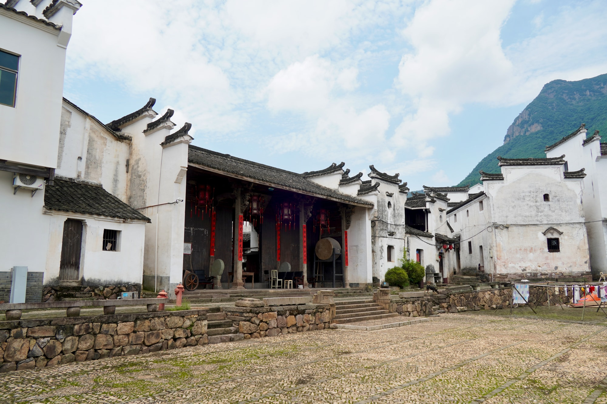

崇仁堂
深堂庄重，气度森然
打卡任务
进行中走进崇仁堂，深堂庄重，气度森然。完成这一站，收集专属文化印章。
已完成 0 / 8 处
领取限定奖励
景点简介
查看详情崇仁堂坐落在新叶村中央的高地上，是叶氏一个房派的大祠堂，也是村中规模较大的宗祠之一。它在古村宗祠群中具有鲜明而独立的位置。

深堂庄重，气度森然
走进崇仁堂，深堂庄重，气度森然。完成这一站，收集专属文化印章。
已完成 0 / 8 处
崇仁堂坐落在新叶村中央的高地上，是叶氏一个房派的大祠堂，也是村中规模较大的宗祠之一。它在古村宗祠群中具有鲜明而独立的位置。